Թեստ 18
30:00
1. «Ճանապարհային երթևեկության անվտանգության ապահովման մասին» ՀՀ օրենքի համաձայն` հետիոտներին են հավասարեցվում`
2. «Ճանապարհային երթևեկության անվտանգության ապահովման մասին» ՀՀ օրենքի համաձայն` թեթև մարդատար ավտոմոբիլ է համարվում`
3. Տրանսպորտային միջոցների շահագործումն արգելվում է, եթե`
4. Տրանսպորտային միջոցների շահագործումն արգելվում է, եթե՝
5. Ո՞ր ուղղությամբ է արգելվում երթևեկությունը:
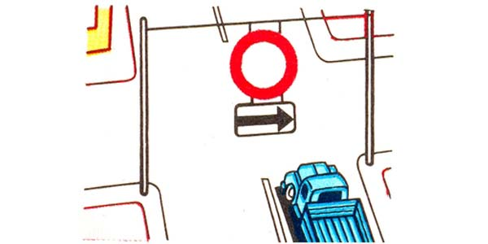
6. Նշաններից ո՞րն է պարտադրում զիջել ճանապարհը հատվող ճանապարհով ընթացող տրանսպորտային միջոցներին:
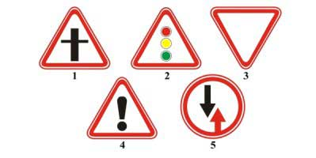
7. Ինչպե՞ս պետք է վարվի վարորդը տվյալ իրավիճակում:
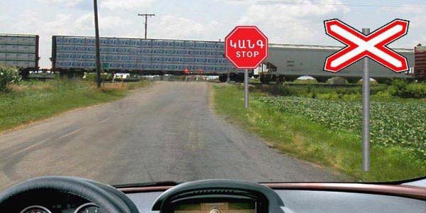
8. Տրանսպորտային միջոցները խաչմերուկը կանցնեն հետևյալ հերթականությամբ՝
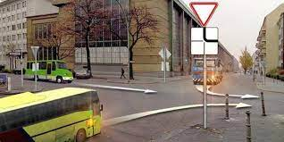
9. Պարտավոր է՞ թեթև մարդատարի վարորդը զիջել ճանապարհն իր գոտի վերադասավորվող ավտոկռունկի վարորդին
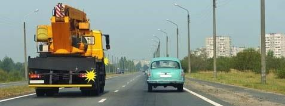
10. Աջ շրջադարձի դեպքում վարորդը պարտավոր է ճանապարհը զիջել`
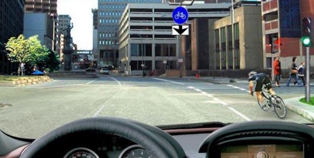
11. Դեպի ձախ երթևեկությունը շարունակելու համար որտե՞ղ պետք է կանգ առնի ավտոբուսի վարորդը ճանապարհը թեթև մարդատար ավտոմոբիլին զիջելու համար:
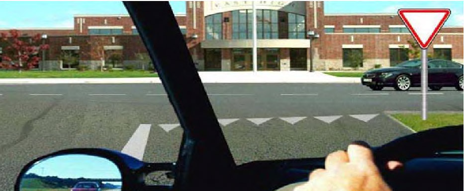
12. Այս նշանով կահավորված ճանապարհներին միջքաղաքային ավտոբուսների վարորդներն իրավունք ունեն երթևեկելու ոչ ավելի քան`
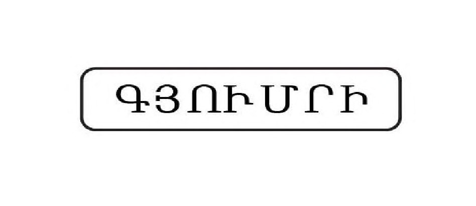
13. Թույլատրվու՞մ է արդյոք հետիոտներին շարժվել «Ավտոմայրուղի» նշանով կահավորված ճանապարհով:
14. Առաջնահերթ երթևեկության իրավունք ունի
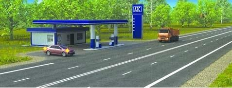
15. Ո՞րտեղից են սկսում գործել բնակավայրով երթևեկության կանոնները
16. Ո՞ր վարորդն է պարտավոր չխոչընդոտել հետիոտներին:
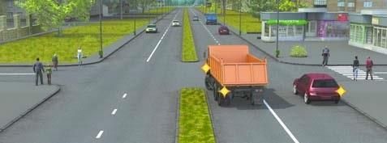
17. Ո՞ր վարորդն է խախտում երթևեկության կանոնները շրջադարձ կատարելիս:
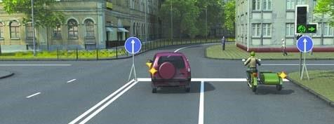
18. Ո՞վ է խախտել կանգառ կատարելու կանոնները:
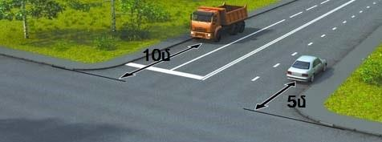